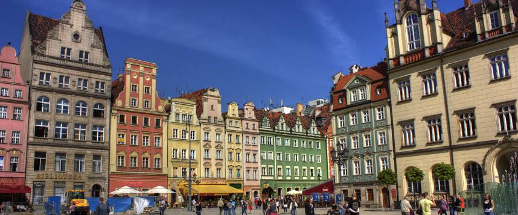

Welcome to our official rankings for the Top 10 Places in the World to Study Abroad
Our own international student survey* reached nearly 24,000 prospective students representing 230+ countries. Using the top reasons for studying abroad, ranked by students who prioritize finding the right destination country over program or school, we’ve created education rankings of the best countries to study abroad in the world**
Our rankings of the best places to study abroad are based on multiple statistical indicators for each of these 7 factors:
- High-quality teaching
- Achieving career goals
- Personal development
- Culture and lifestyle
- Opportunities to network or make new friends
- Language learning
- Adventure
Which countries are the top 10 study abroad destinations in 2024?
#11 Malta

Malta is known for being one of the safest countries in the
world, making it an ideal place for students looking for a
peaceful environment to study. It's popular among international
students because of its high-quality education system,
English-speaking environment, good living standards, affordable
education costs and beautiful tourist attractions.
It
provides high-quality education and many employment
opportunities, making it a popular choice for studying.
Additionally, living costs in Malta are lower than in other
parts of Europe, making it a good option for students on a tight
budget
#10 Germany
Germany made a meteoric rise this year to take among the top 10 countries to study abroad! And no wonder. Between its incredible reputation as a higher education powerhouse and the low cost of tuition and living, Germany stands out among the countries of the world as a destination for international students. Couple that with the country’s high standards of living, cultural opportunities, and safe, efficient infrastructure, and you have the ideal study location. Use your time in Germany to take in the cultural heritage and diverse natural beauty of the countryside. Enjoy the festive and historic Christmas market in Braunschweig, indulge in some German beer and schweinebraten at a Bavarian Oktoberfest, explore fairytale castles and medieval abbeys in the Black Forest, or dive into the global film scene during the Berlinale, the world’s largest film festival. Enjoy!
#9 Poland

Poland is an incredible country with a diverse and rich
education history. Studying in Poland will give you a high
quality European degree, recognizable all around the World at a
low cost! Not only you will enjoy high quality of teaching, but
also have a chance to pursue your future career in EU.
Polish schools compete with each other not only to provide
a wide variety of high quality courses, but also offer
attractive tuition fees in programs such as MBBS, engineering,
international business, tourism, hospitality and other courses.
POLAND (POLSKA) lies in the very heart of the European continent
making it easy access to and from other popular European
destinations.
#8 Spain
Rising two places this year is Spain, a country known for its vibrant and welcoming culture. Spain has a long and storied history of conquest, diversity, and heritage reflected in its art, cuisine, music, languages, literature, and traditions. Even a quick glance at the menu of a tapas bar will give you a glimpse of the eclectic experiences Spain has to offer. The country is a haven for students of art, architecture, and design, with the works of masters like Goya, Gaudi, Calatrava, Dali, Campo Baeza, and Picasso providing inspiration. Spain is also rising as a tech and innovation center – the country launched its Spanish Smart Cities Network in 2011, and Barcelona was named the European Capital of Innovation in 2014. With each region and city offering unique cultural experiences, the most challenging decision about studying in Spain might be which city to choose – and what to study once you get there. ¡Vamos!
#7 France

For many people, the glamour and charm of Paris sums up the appeal of France, and while Paris is certainly the country’s crown jewel, studying in France is so much more than just a stroll down the Seine. With more than 3,500 public and private higher education institutions – from universities and Grandes Ecoles to specialized schools for everything from art to medicine – your opportunities for excellent higher education are nearly limitless in France. Couple that with France’s cultural clout, and you have the ideal study location for someone looking for a top-ranked degree and an international experience to last a lifetime. Whether you settle in Paris or Provence, studying in France will offer you a wealth of opportunities to explore. Bienvenue!
#6 Finland
Unlock your dreams in Finland, a paradise for international students! Experience world-class education, innovative learning, and breathtaking landscapes. With free tuition for EU/EEA students and affordable fees for others, Finland beckons you to explore its 15 top-notch universities and 25 universities of applied sciences. Discover cutting-edge programs in business, engineering, design, and more, taught in English. Enjoy a unique cultural adventure, immerse in Finnish hospitality, and thrive in a safe and stable environment. Scholarships await, and part-time jobs, internships, and post-graduation work permits open doors to exciting careers. Join the ranks of Finland's brightest minds and apply now - January-March or September-November. Get ready for the adventure of a lifetime!
#5 Australia

Australia is a consistent favorite of international students the world over. With a wide range of higher education offerings, highly ranked universities, and a system that is known for welcoming international students, it is no wonder that Australia has been in our Top 10 since the beginning. Australia is known for its laid-back attitude, amazing climate, and incredible natural beauty. With most of its big cities, and therefore, its universities, located along the coastal regions, you are never far from the beach. Each city in Australia has its own identity and distinct personality, so whether you choose the thriving art scene and eco-friendly atmosphere of Melbourne, the outdoor enthusiast’s paradise of Perth, or the glitz and glam of the Gold Coast, you are sure to find a place that suits your style.
#4 Ireland
Studying in Ireland will provide you with academic success,
internationally recognised credentials, a vibrant campus life,
abundant growth in research, and many job opportunities.
What’s
more, universities and colleges in Ireland offer an interactive
and innovative learning approach in which you will interact with
your classmates and instructors while learning about the topic
under discussion. The Irish educational system supports
international students in every aspect of their abroad
experience.
Both the Irish government and private and
public organisations offer a wide variety of bursaries and
scholarships. Don't forget to check the eligibility requirements
and the submission date for each of these partial scholarships
before submitting an application.
#3 UK

The UK is never far from the top of our list, and for good reason. As home to some of the most renowned and prestigious universities in the world, the United Kingdom is a go-to choice for international students. Living and studying in the UK gives international students the opportunity to learn and explore in a country steeped in culture and history. The UK may occupy a small area compared to some of the other countries on this list, but it packs a lot into that space. The four countries that make up the United Kingdom boast prehistoric monuments, medieval ruins, modern architectural marvels, bustling cities, quaint villages, and a vibrant arts and culture scene, with each country adding its own unique personality and history to the mix. Whether you go surfing on the coast of Wales, dance the night away at a Hogmanay ceilidh in Scotland, explore geological wonders in Northern Ireland, or stroll in the picturesque Cotswolds of England, the UK will not disappoint.
#2 USA
The US has been rising steadily in our rankings since 2019 and now takes the second-place spot for study-abroad locations! Long a popular destination for international students, the US boasts some of the world’s highest-ranked universities, numerous research opportunities, and a higher education culture that is the stuff of Hollywood dreams. Idyllic college campuses awash in autumnal colors, roaring crowds cheering their school’s team at brightly lit football games, and big-city campuses where co-eds can explore the great American metropolises while they study, are actual realities, along with every other kind of school and institution imaginable. With fifty states and one of the largest higher education systems in the world, the US offers almost unlimited choices for study abroad experiences.
#1 Canada

Oh, Canada! There’s a reason nearly 900,000 international students chose Canada as their study destination in 2023. This North American country is diverse, welcoming, and offers flexible, high-quality higher education that is recognized throughout the world. For medical and STEM students, Canada offers extensive research opportunities, and international students in all fields will find generous funding options and work schemes. Canada is also a great option for language students. With French and English as official languages, studying in Canada is an excellent way to learn a new language. The country is diverse in more than just language. Stretching more than 5,500 kilometers across the top of North America, Canada is the second largest country by area in the world and features a diversity of climates, landscapes, and cultures. From the maritime and mild east and west coasts to the arctic tundra and mountainous majesty of the northwest, Canada presents awesome natural beauty.